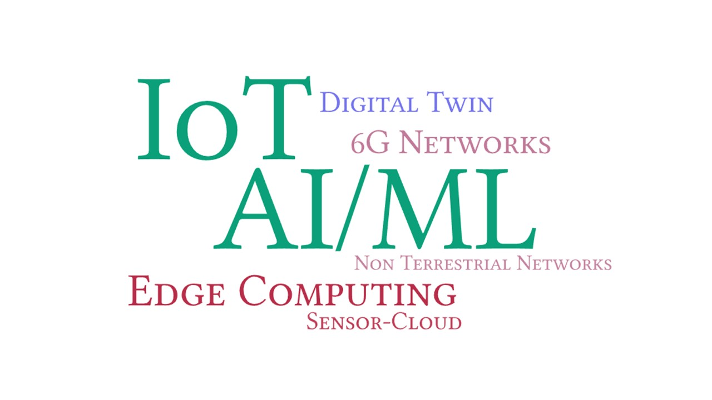

Research
Our work is currently focused in applying AI/ML techniques for IoT and future networks. Specifically, we are working on designing intelligent solutions for Edge and Non-Terrestrial Networks, Wirelessly Powered IoT, 6G Network and Edge-Cloud-Continuum, and Digital Twin. Our lab is equipped with computing (GPU & edge) and communication modules, IoT development boards and various sensors.

Recent Publications
[no title info]
[no publisher info]
·
[no date info]
·
[no id info]
All
2023
Wireless power transfer with unmanned aerial vehicles: State of the art and open challenges
Pervasive and Mobile Computing
·
01 Jun 2023
·
doi:10.1016/j.pmcj.2023.101820
2022
Heterogeneity-aware P2P Wireless Energy Transfer for Balanced Energy Distribution
GLOBECOM 2022 - 2022 IEEE Global Communications Conference
·
04 Dec 2022
·
doi:10.1109/GLOBECOM48099.2022.10001645
Balanced wireless crowd charging with mobility prediction and social awareness
Computer Networks
·
01 Jul 2022
·
doi:10.1016/j.comnet.2022.108989
Wireless Crowd Charging with Battery Aging Mitigation
2022 IEEE International Conference on Smart Computing (SMARTCOMP)
·
01 Jun 2022
·
doi:10.1109/smartcomp55677.2022.00034
2021
PANDA: Preference-Based Bandwidth Allocation in Fog-Enabled Internet of Underground-Mine Things
IEEE Systems Journal
·
01 Dec 2021
·
doi:10.1109/JSYST.2021.3086150
MobiWEB: Mobility-Aware Energy Balancing for P2P Wireless Power Transfer
2021 IEEE Symposium on Computers and Communications (ISCC)
·
05 Sep 2021
·
doi:10.1109/ISCC53001.2021.9631530
Internet of Things for Agricultural Applications: The State of the Art
IEEE Internet of Things Journal
·
15 Jul 2021
·
doi:10.1109/JIOT.2021.3051418
2020
SecRET
ACM Transactions on Autonomous and Adaptive Systems
·
31 Mar 2020
·
doi:10.1145/3431390
SEAL: Self-adaptive AUV-based localization for sparsely deployed Underwater Sensor Networks
Computer Communications
·
01 Mar 2020
·
doi:10.1016/J.COMCOM.2020.02.050
2019
DVSP: Dynamic Virtual Sensor Provisioning in Sensor–Cloud-Based Internet of Things
IEEE Internet of Things Journal
·
01 Jun 2019
·
doi:10.1109/JIOT.2019.2899949
2017
Sensing-cloud: Leveraging the benefits for agricultural applications
Computers and Electronics in Agriculture
·
01 Apr 2017
·
doi:10.1016/J.COMPAG.2017.01.026
2016
ENTRUST: Energy trading under uncertainty in smart grid systems
Computer Networks
·
01 Dec 2016
·
doi:10.1016/J.COMNET.2016.09.021
Effects of Wind-Induced Near-Surface Bubble Plumes on the Performance of Underwater Wireless Acoustic Sensor Networks
IEEE Sensors Journal
·
01 Jun 2016
·
doi:10.1109/JSEN.2015.2443012
2015
Cloud-Based Optimal Energy Forecasting for Enabling Green Smart Grid Communication
2015 IEEE Global Communications Conference (GLOBECOM)
·
01 Dec 2015
·
doi:10.1109/GLOCOM.2015.7417591
Wireless sensor networks for agriculture: The state-of-the-art in practice and future challenges
Computers and Electronics in Agriculture
·
01 Oct 2015
·
doi:10.1016/J.COMPAG.2015.08.011
ENTICE: Agent-based energy trading with incomplete information in the smart grid
Journal of Network and Computer Applications
·
01 Sep 2015
·
doi:10.1016/J.JNCA.2015.05.008
Game-Theoretic Topology Controlfor Opportunistic Localization in Sparse Underwater Sensor Networks
IEEE Transactions on Mobile Computing
·
01 May 2015
·
doi:10.1109/TMC.2014.2338293
D2P: Distributed Dynamic Pricing Policyin Smart Grid for PHEVs Management
IEEE Transactions on Parallel and Distributed Systems
·
01 Mar 2015
·
doi:10.1109/TPDS.2014.2315195
2014
Dynamic Duty Scheduling for Green Sensor-Cloud Applications
2014 IEEE 6th International Conference on Cloud Computing Technology and Science
·
01 Dec 2014
·
doi:10.1109/CLOUDCOM.2014.169
Oceanic forces and their impact on the performance of mobile underwater acoustic sensor networks
International Journal of Communication Systems
·
31 Oct 2014
·
doi:10.1002/DAC.2882
Performance analysis of distributed underwater wireless acoustic sensor networks systems in the presence of internal solitons
International Journal of Communication Systems
·
06 Aug 2014
·
doi:10.1002/DAC.2843
2013
Tic‐Tac‐Toe‐Arch: a self‐organising virtual architecture for Underwater Sensor Networks
IET Wireless Sensor Systems
·
01 Dec 2013
·
doi:10.1049/IET-WSS.2012.0139
MobiL: A 3-dimensional localization scheme for Mobile Underwater Sensor Networks
2013 National Conference on Communications (NCC)
·
01 Feb 2013
·
doi:10.1109/NCC.2013.6488033
Web of Science
[no publisher info]
·
[no date info]
·
wosuid:WOS:000465774304033
Web of Science
[no publisher info]
·
[no date info]
·
wosuid:PPRN:13235486